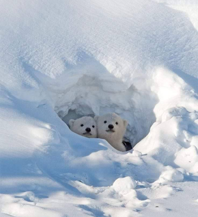
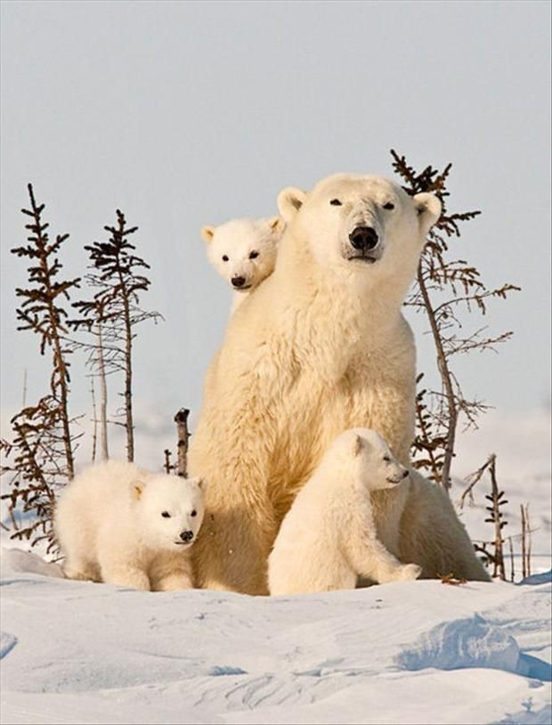

Ice-Bear Organization
Ice-Bear Organization |
Get to know the ice bears
From cub to adult, the polar bear leads an extraordinary life that is especially adapted to the freezing Arctic sea ice.
|  | Polar Bear CubsNewborns are 30-35 centimeters (12-14 inch) tall and weigh less than half a kilogram when they are completely reliant on their mothers (1 lbs). Newborn cubs are toothless, blind, and covered with short, fuzzy fur. Polar bear cubs are most commonly born in December. The mother has 1-3 cubs, with twins being the most frequent. The family stays in the den until the spring. The mother bear does not eat or drink while in her den. She is completely dedicated to nursing and caring for her cubs. |
Leaving the DenPolar bear families usually emerge from their dens in March or April, when the cubs are strong enough to survive outside of the Arctic and make the journey to sea ice. Mother bears now can begin teaching their cubs how to hunt seals on ice and live in the Arctic. Polar bear cubs often spend 2.5-3 years with their moms, learning how to hunt, eat, swim, and survive. Polar bears are classified as subadults between the time they leave their mother and the time they are grown enough to mate. |
 |
 |
Reaching AdulthoodWhen polar bears reach mating age, they are considered adults. This is ages 4-6 for females and 6-10 for males. Adult males often weigh 350-600 kg by the time they reach maturity (775-1,300 lbs). Adult females typically weigh 150-295 kg (330-650 lbs), while bigger individuals exist. Polar bears live an average of 15 to 18 years in the wild, however biologists have tagged a few bears in their early 30s. |
 |
Keep up with the snow bearsJoin us on our journey and become a part of a community dedicated to polar bear protection. |